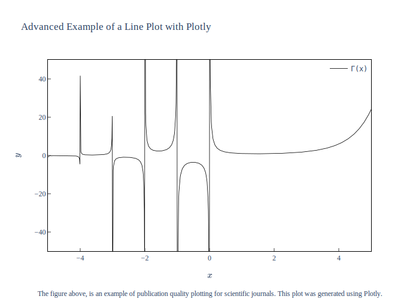

<h1 id="an-advanced-example-of-generating-publication-quality-plots-for-scientific-journals-in-python-using-plotly">An advanced example of generating publication quality plots for scientific journals in Python using Plotly</h1>
<script src="https://gist.github.com/Miladiouss/e2f4fef284ebf8461752a769e6ec5864.js"></script>
<p></p>
